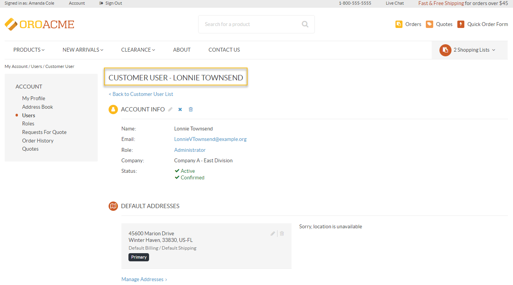
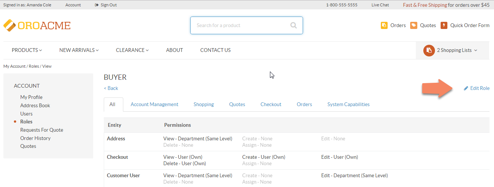
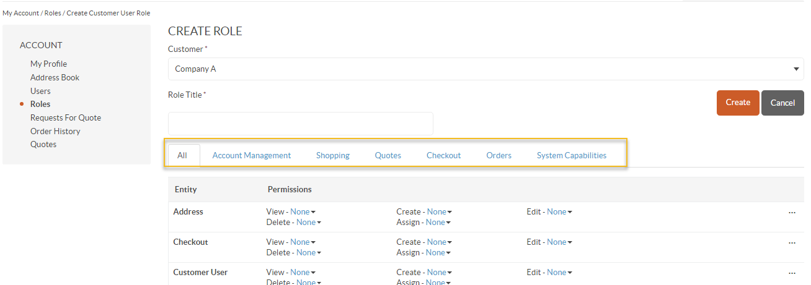

This section of the guide will provide information on how you can manage your organization users and roles, so they have the necessary level of access to the OroCommerce storefront capabilities.
The storefront user, role and permissions provide users with access to data and the ability to perform tasks based on their business responsibilities and the company guidelines. The ability to do this is crucial for both the buyer and the seller, as it helps support the various operations of their businesses. OroCommerce comes out of the box with the capabilities to allow buyers and sellers to specify the exact roles and permissions each user requires in order to do their job as efficiently as possible, eliminate mistakes and save money.
To locate users:
On the All Users page, you can view and edit the existing users, or create new ones.
Note
Please note that the ability to edit your account information depends on the permissions that correspond to your role. These are defined by the administrator.
The users table shows the following data:
Within the table you have the following action buttons available:
The Customer User View Page has the name of the selected user in the page header.
The page has two sections:
To create a new user, click +Create User on the top right of the page, next to the view table name.
A form will emerge with the following data to provide:
Roles are predefined sets of permissions. In the Roles section, you can view, edit and create new roles to define the level of permissions and access to the actions and data in OroCommerce storefront for the users of a specific role.
To locate roles:
On the All Roles page you will be able to see the list of roles available in the system. By default, the following roles are predefined and available for every customer
The roles table shows the following data:
Within the table you have the following actions buttons available:
To open a specific role: click on the selected role in the view table.
To edit a specific role from its view page: click Edit Role on the right of the page.
To delete a specific customizable role from its view page: click Delete
Note
If the role is predefined, it cannot be deleted. Neither can it be deleted if it is assigned to a user/users. Reassign the assigned users to a different role to be able to delete it.
To create a new user role, click +Create Customer User Role on the top right of the page, next to the table name.
A form will emerge with the following data to provide:
The following permissions are available:
| Permission | Level |
|---|---|
|
|
With the Customer User Role you can manage the following access- and permissions-related settings and capabilities:
| Field | Entities | Capabilities (Check boxes) |
|---|---|---|
| All | Address, Customer User, Customer User Address, Customer User Roles, Grid (Table) View | Account Management:
Checkout:
Application:
|
| Account Management | Address, Customer User, Customer User Address, Customer User Role, Grid View |
|
| Shopping | Shopping List | — |
| Quotes | Quote, Request For Quote | — |
| Checkout | Checkout |
|
| Orders | Invoice, Order | — |
| System capabilities | — | Share Data View |
Note
Predefined roles cannot be edited directly. All the original data is copied so that you can save it as a new user role for your organization. All users will be moved from the original role to this new role after you click Save.
To apply a role to a specific user:
Related Topics